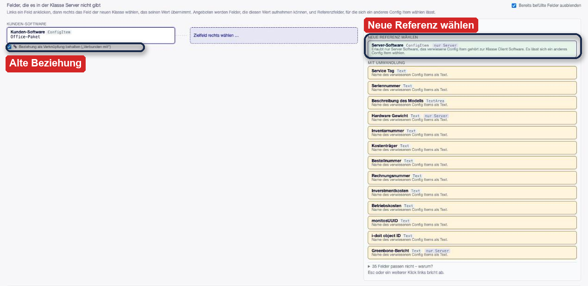
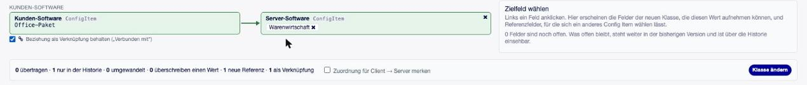
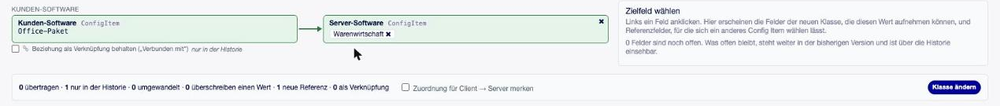
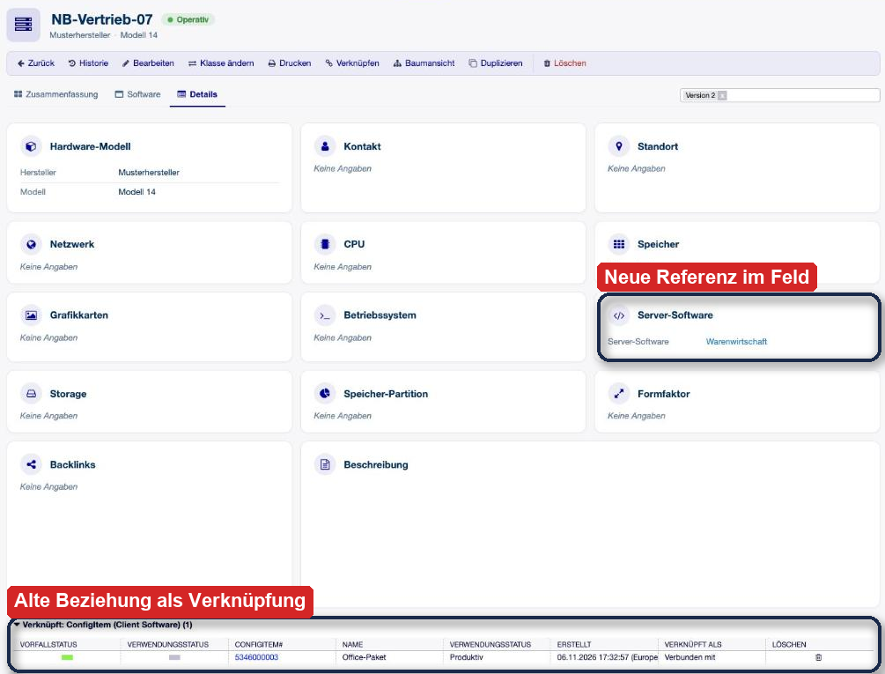
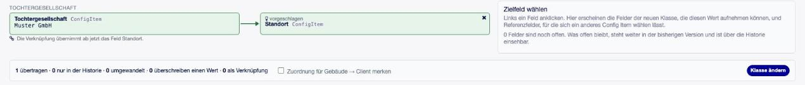

Referenzen beim Klassenwechsel¶
Ein Config Item steht selten allein. Ein Notebook hat Software, ein Server einen Standort, ein Vertrag eine SIM-Karte. Diese Seite erklärt, was mit solchen Bezügen geschieht, wenn ein Config Item die Klasse wechselt, und was Sie dabei selbst entscheiden.
Das Wichtigste vorab: Es geht nichts verloren. Der alte Wert bleibt immer in der vorherigen Version und in der Historie. Sie entscheiden nur, wie der Bezug in der neuen Klasse weiterlebt.
Zwei Arten von Bezügen¶
OTOBO kennt zwei Wege, ein Config Item mit einem anderen zu verbinden. Für den Klassenwechsel ist der Unterschied entscheidend.
- Referenz (im Feld)
Ein Feld der Klasse enthält das andere Config Item, zum Beispiel das Feld Kunden-Software mit dem Wert Office-Paket. Sie sehen es beim Feld in der Config-Item-Ansicht und ändern es über Bearbeiten. Viele Referenzfelder erlauben nur bestimmte Klassen: Server-Software nimmt ausschließlich Config Items der Klasse Server Software auf.
- Verknüpfung
Eine Beziehung zwischen zwei Config Items, die an keinem Feld hängt. Sie steht in der Config-Item-Ansicht im Kasten Verknüpft, hat einen Typ wie „Verbunden mit“ und lässt sich dort löschen. Sie ist in beide Richtungen sichtbar.
Bei jedem Klassenwechsel stellen sich zwei getrennte Fragen¶
Frage 1: Was wird aus dem Feld? Das hängt davon ab, welche Felder die neue Klasse hat.
Das Referenzfeld … |
Was geschieht |
Was Sie tun |
|---|---|---|
gibt es in beiden Klassen (etwa Standort oder Betriebssystem) |
Wert und Referenz bleiben, wie sie sind. |
Nichts. |
gibt es nur in der alten Klasse, und genau ein freies Referenzfeld der neuen Klasse erlaubt das Config Item |
Die Maske öffnet mit beiden schon zugeordnet, markiert als vorgeschlagen. |
Prüfen. Mit × lösen, falls es nicht passt. |
gibt es nur in der alten Klasse, und mehrere Felder der neuen Klasse erlauben das Config Item |
Sie stehen rechts unter Gleicher Typ. |
Eines anklicken oder offen lassen. |
gibt es nur in der alten Klasse, und kein Feld der neuen Klasse erlaubt das Config Item |
Referenzfelder, die nur die neue Klasse hat, stehen unter Neue Referenz wählen. |
Eines anklicken und ein anderes Config Item suchen, oder offen lassen. |
Frage 2: Was wird aus der alten Beziehung? Das regelt der Haken Beziehung als Verknüpfung behalten unter dem Feld.
Situation |
Ergebnis |
|---|---|
Haken gesetzt (Standard) |
Aus der Beziehung wird eine normale Verknüpfung mit gleichem Typ und gleicher Richtung. |
Haken entfernt |
Keine Verknüpfung, der alte Wert steht nur noch in der vorherigen Version. |
Wert geht in ein Feld, das selbst verknüpft |
Es gibt nichts zu entscheiden. Die Maske sagt: Die Verknüpfung übernimmt ab jetzt das Feld … |
Neue Referenz gewählt |
Der Haken bleibt, denn das neue Config Item ersetzt die alte Beziehung nicht von selbst. |
Den Haken zeigt die Maske bei Referenzfeldern, die ihre Config Items zugleich verknüpfen. Das legt die Konfiguration des Feldes fest (Verknüpfungstyp und Richtung), eingestellt werden muss für den Klassenwechsel nichts.
Ein Beispiel Schritt für Schritt¶
Das Notebook NB-Vertrieb-07 wurde als Client angelegt und hat im Feld Kunden-Software den Wert Office-Paket. Tatsächlich ist es ein Server. Die Klasse Server hat keine Kunden-Software, aber ein Feld Server-Software, das nur diese Klasse erlaubt.
1. Klasse wählen. In der Maske steht Kunden-Software links, weil die neue Klasse dieses Feld nicht hat. Darunter ist der Haken bereits gesetzt, die Beziehung bliebe also erhalten, auch wenn Sie sonst nichts tun. Unten zählt die Maske mit: 1 als Verknüpfung.

Abb. 4 Hersteller und Modell gibt es in beiden Klassen, sie gehen von selbst mit. Links bleibt, was die Klasse Server nicht hat.¶
2. Feld anklicken. Rechts erscheint oben Neue Referenz wählen mit dem Feld Server-Software. Der Hinweis nennt den Grund: Office-Paket gehört zur Klasse Client Software und passt deshalb nicht direkt hinein. Darunter stehen die Textfelder, die nur den Namen als Text aufnehmen könnten. Das ist dann aber keine Referenz mehr.


Abb. 5 Rechts die neue Referenz, links darunter der Haken für die alte Beziehung.¶
3. Entscheiden. Jetzt gibt es zwei sinnvolle Wege.
Weg A: offen lassen. Der Server hat dann keinen Wert in Server-Software. Office-Paket bleibt als „Verbunden mit“ verknüpft und zeigt weiter auf dieses Config Item. Das passt, wenn die Beziehung stimmt und nur die Klasse falsch war.
Weg B: neue Referenz wählen. Sie klicken Server-Software an und suchen, was auf dem Server wirklich läuft. Die Suche startet ab zwei Zeichen und findet nur Config Items der Klassen, die das Feld erlaubt.

Abb. 6 Die Suche zeigt nur Server Software. Bis ein Config Item gewählt ist, bleibt der Knopf Klasse ändern gesperrt, und die Maske sagt, was fehlt.¶


Abb. 7 Gewählt: Die Zusammenfassung zählt 1 neue Referenz und 1 als Verknüpfung.¶
Soll die alte Beziehung nicht bleiben, entfernen Sie den Haken. Die Zeile sagt dann nur in der Historie, und der Zähler springt auf 0 als Verknüpfung.


Abb. 8 Haken entfernt: Office-Paket steht nach dem Wechsel nur noch in der vorherigen Version.¶
4. Klasse ändern. Das Fenster schließt sich, und die Ansicht zeigt das Config Item in der neuen Klasse. Nummer, Tickets, Historie und Anhänge sind unverändert.


Abb. 9 Nach dem Wechsel auf dem Reiter Details: Warenwirtschaft steht im Feld Server-Software, Office-Paket im Kasten Verknüpft, dort lässt es sich auch löschen.¶
Wann die Maske etwas vorschlägt¶
Gibt es genau ein freies Referenzfeld, das den Wert unverändert aufnehmen kann, ordnet die Maske es beim Öffnen zu und markiert es mit vorgeschlagen. Im Bild wird ein Gebäude zum Client: Die Tochtergesellschaft passt in das Feld Standort. Weil Standort selbst verknüpft, gibt es hier keinen Haken.


Abb. 10 Ein Vorschlag ist nur eine Vorbelegung. Das × löst ihn, dann bleibt das Feld offen.¶
Die Maske schlägt nichts vor, wenn mehrere Felder infrage kommen, wenn das einzige passende Feld schon einen Wert hat oder wenn zwei Felder dasselbe Ziel wollen. Eine gemerkte Zuordnung hat Vorrang vor einem Vorschlag.
Häufige Fragen¶
- Warum kann ich das Office-Paket nicht einfach in Server-Software übernehmen?
Weil das Feld nur Config Items der Klasse Server Software erlaubt. Ein anderer Wert dort verstieße gegen die Konfiguration des Feldes. Soll das Feld auch andere Klassen aufnehmen, passt Ihre Administration die Einschränkung des Feldes an.
- Die Suche findet nichts. Was nun?
Dann gibt es kein Config Item, das zur Einschränkung des Feldes und zu Ihrem Suchbegriff passt. Die Maske sagt Kein Config Item gefunden. Lösen Sie die Zuordnung mit ×, dann ist der Knopf Klasse ändern wieder frei. Das Feld lässt sich später über Bearbeiten füllen.
- Warum werden Lizenz, Betriebssystem oder Standort nicht angeboten?
Felder, die beide Klassen haben, behalten ihren eigenen Wert. Unter Neue Referenz wählen stehen nur Felder, die die alte Klasse nicht hatte.
- Zeigt die Software danach noch auf mein Config Item?
Ja, solange der Haken gesetzt bleibt, denn eine Verknüpfung ist in beide Richtungen sichtbar. Auch wenn der Wert in ein passendes Referenzfeld geht, bleibt der Bezug bestehen.
- Was ist mit Feldern anderer Config Items, die auf dieses Config Item zeigen?
Sie behalten ihren Wert. Erlaubt ein solches Feld die neue Klasse nicht, lässt sich dieses Config Item dort aber künftig nicht mehr auswählen. Die Maske zählt diese Verweise und warnt vorab.
- Was speichert „Zuordnung merken“?
Nur das Feld, nie das gewählte Config Item. Beim nächsten Wechsel zwischen denselben Klassen steht Server-Software schon da, das Config Item wählen Sie jedes Mal neu.
- Kann ich mehrere Config Items wählen?
Ja, wenn das Zielfeld mehrere Werte erlaubt. Nimmt es nur einen auf, verschwindet die Suche nach der ersten Auswahl.